Project Overview
This project investigates various techniques for manipulating image frequencies to achieve creative visual effects. For example, sharpening an image can be accomplished by enhancing its high-frequency components, while edge detection can be achieved using finite difference filters. Hybrid images are created by merging the high-frequency details of one image with the low-frequency elements of another. Additionally, for the last part of this project, images were blending seamlessly across multiple frequency ranges by utilizing Gaussian and Laplacian pyramids for Multiresolution Blending.
Part 1.1: Finite Difference Operator
In this section, we compute the partial derivatives of the image in the x and y directions using finite difference filters. The filters for each direction are defined as:
Let A denote the original image. To compute the gradients in the x and y directions, we convolve the image with the respective filters:
Once the gradients are computed, the gradient magnitude is calculated by combining the x and y components using the formula:
Finally, the gradient magnitude image is binarized using a threshold to highlight the edges while suppressing noise. The threshold is determined based on qualitative analysis of the output.
To create an edge image, the gradient magnitude is binarized using a threshold value, suppressing noise while highlighting the real edges.

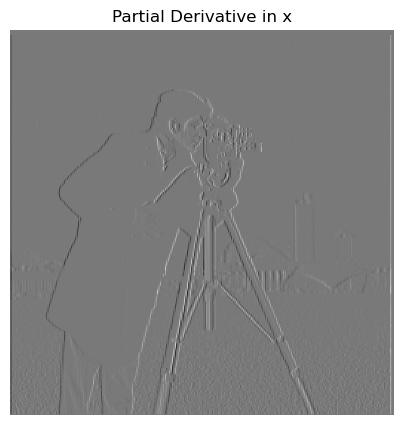
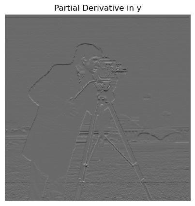
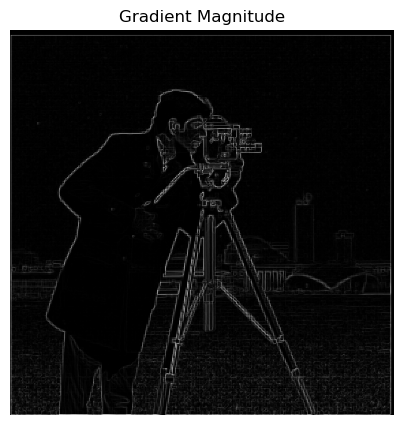
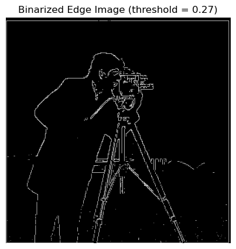
Part 1.2: Derivative of Gaussian (DoG) Filter
The finite difference operator often produces noisy results, so we apply a Gaussian smoothing filter, f, to a blurred version of the image, Ab, to reduce noise. The Gaussian filter is generated by taking the outer product of a 1D Gaussian kernel with itself to create a 2D Gaussian filter.
Once the image is smoothed, we compute the partial derivatives using the same finite difference filters.
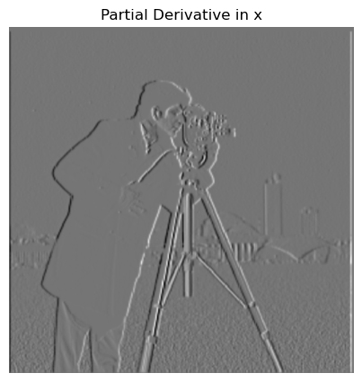
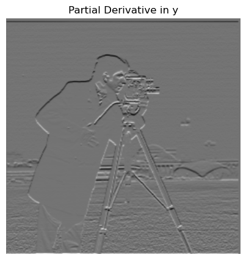
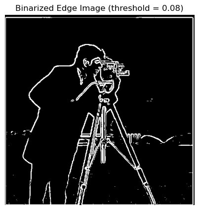
We can also directly compute the derivative of a Gaussian (DoG) filter by convolving the Gaussian with D_x and D_y

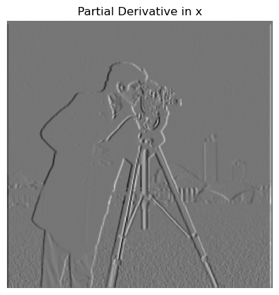
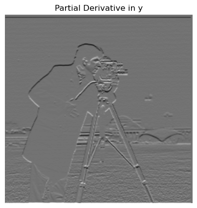
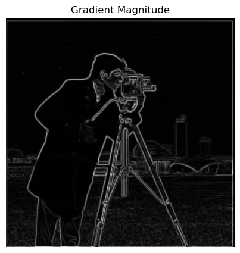
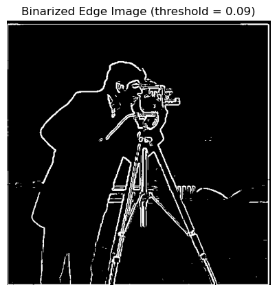
By applying the DoG filters to the image, we verify that the results are similar to those obtained with two separate convolutions, with a mild improvement in denoising.
Part 2.1: Image Sharpening
In this section, we explore image sharpening using a technique that enhances the edges of an image by applying a filter. The progression of sharpening can be seen below for different alpha values. A higher alpha leads to a stronger sharpening effect.

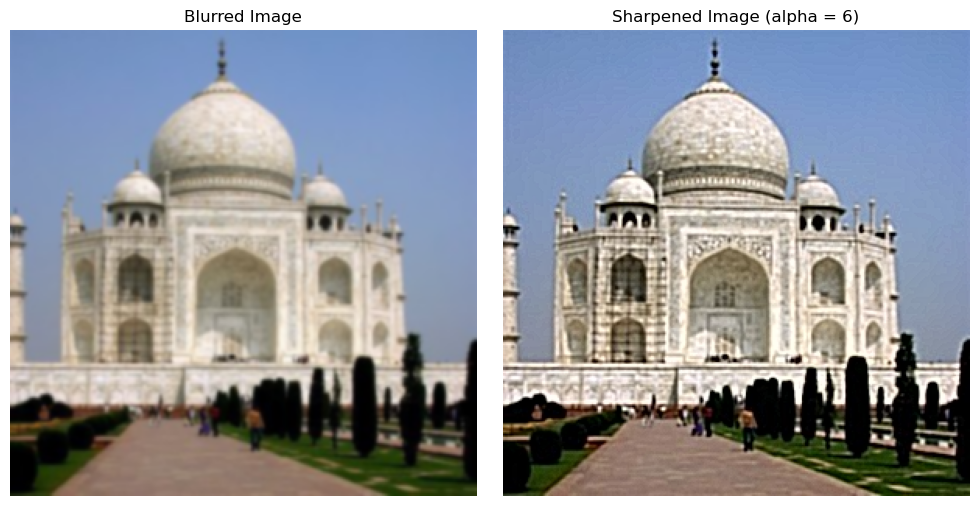
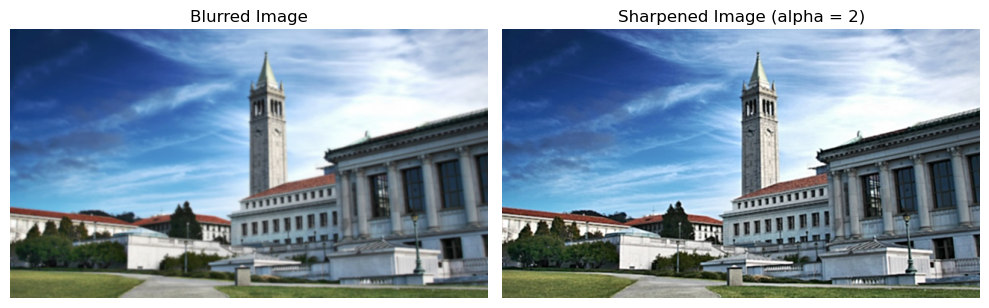
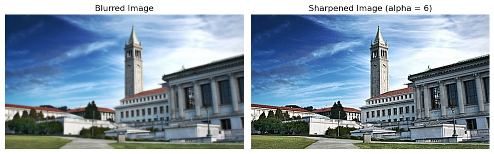
Part 2.2: Hybrid Images
Hybrid images combine the low-frequency content of one image with the high-frequency content of another image. This creates a unique visual effect where the observer perceives different images at different viewing distances.


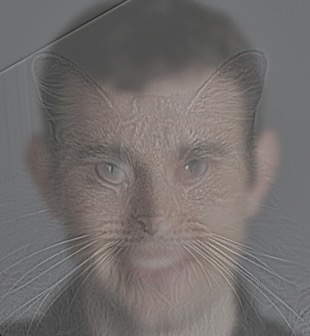
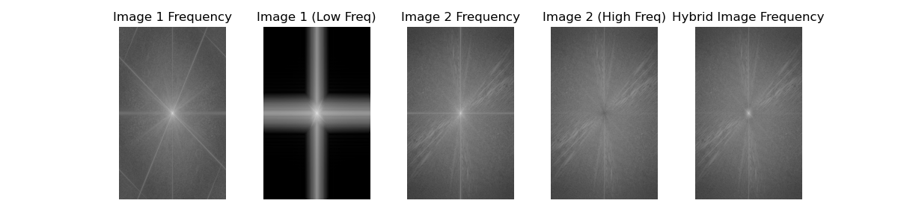
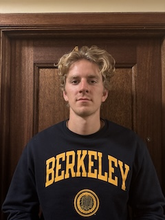
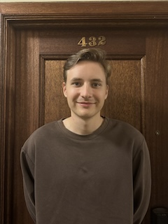
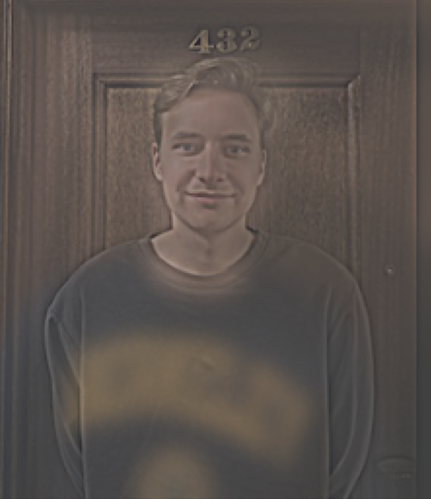
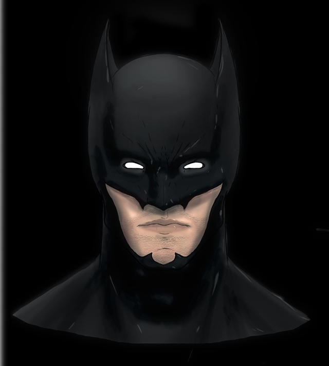
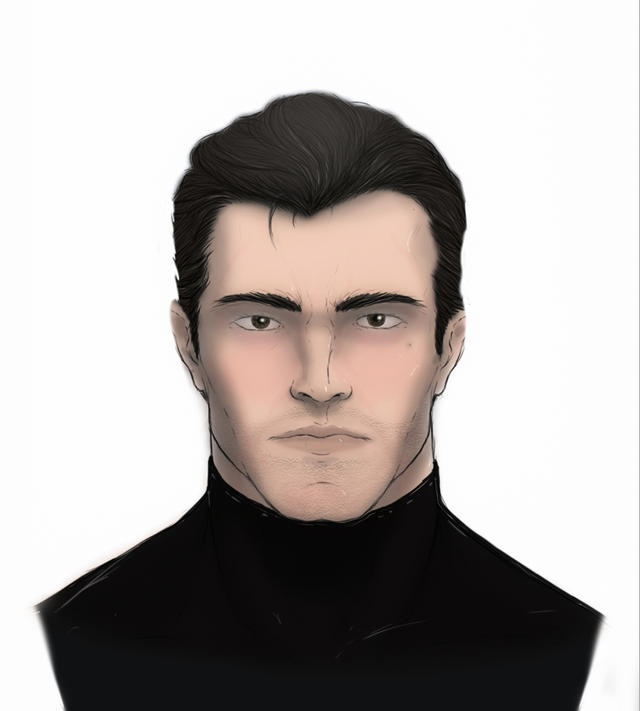
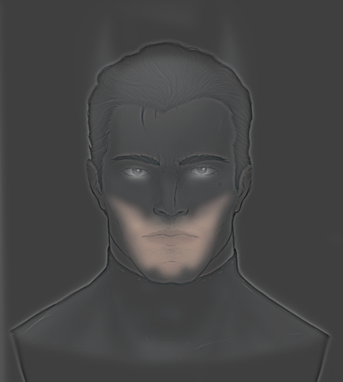
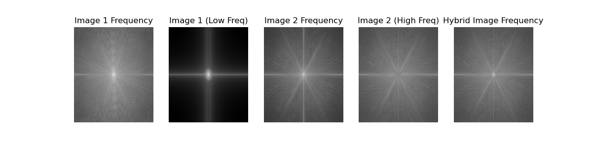
Gaussian and Laplacian stacks are multi-resolution representations of images that allow for blending images at different levels of detail. Below are the Gaussian and Laplacian stacks for the Apple and Orange images.
Part 2.3: Gaussian and Laplacian Stacks
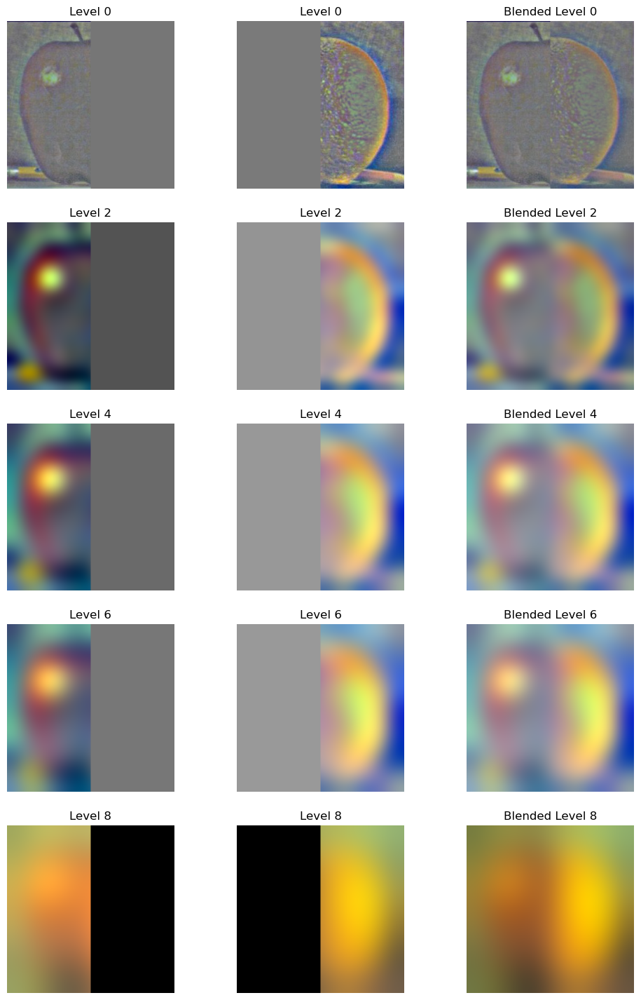
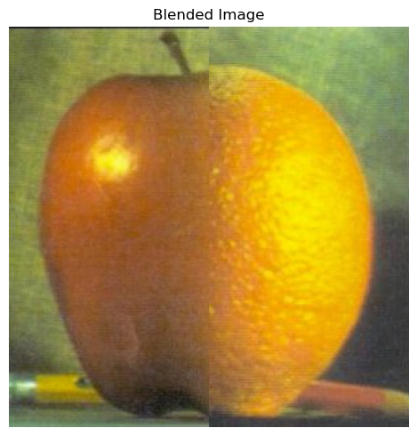
Part 2.4: Multiresolution Blending
Multiresolution blending allows us to blend images by smoothly combining them at different levels of resolution. In this example, we blend an image of an Apple and an Orange to create the "Oraple", along with some other fun attempts.
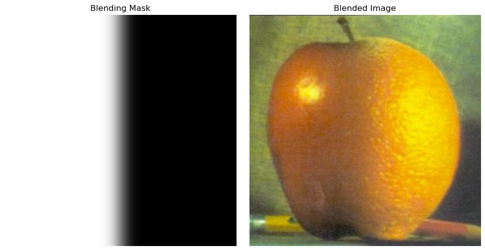
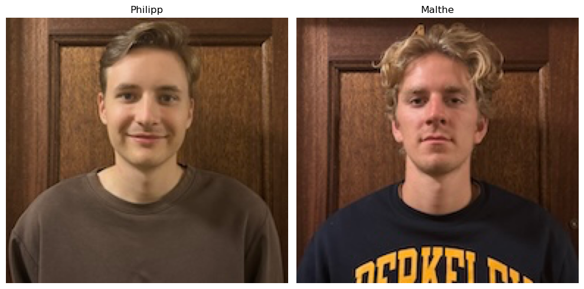
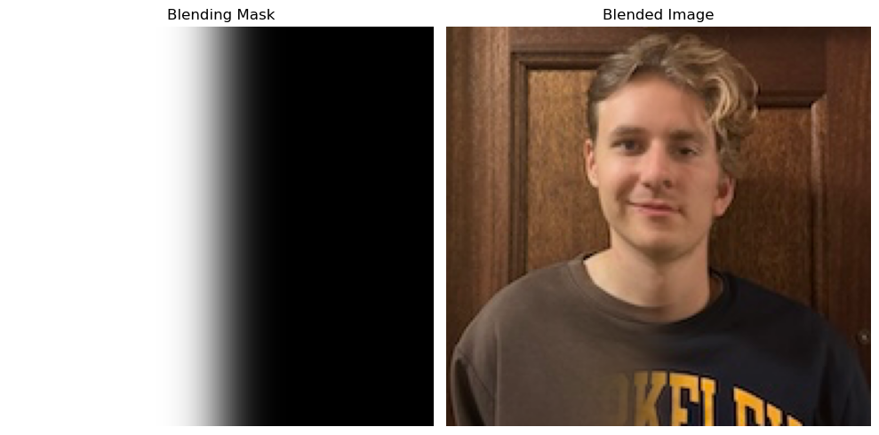
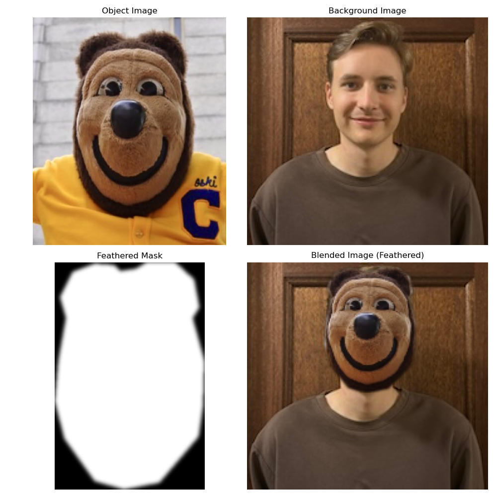
For the irregular mask, I created a separate script that uses the PolygonSelector package to cut out a mask shape and place it on another outlined area. Now my friend can be our school mascot :D
Acknowledgements
This project is a course project for CS 180 at UC Berkeley. Part of the starter code is provided by course staff. This website template is referenced from Bill Zheng.